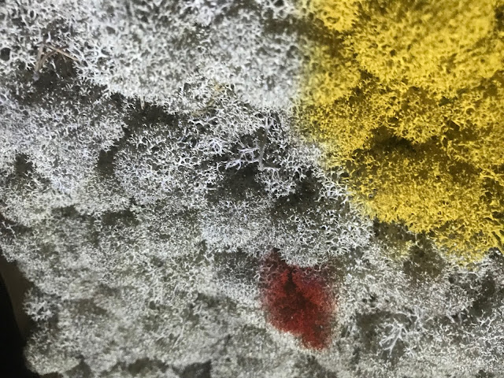

PERCEPT
Audio-visual interactive installation by Tonoptik+

The installation explores the relationship between nature and modern society. Artists invite viewers to experience natural imagery through technology in an artificial environment, encouraging reconsideration of coexistence with nature and self-awareness.
Technical Specifications
Equipment: Video projector, Kinect sensor, computer, Arduino, linear motor
Software: TouchDesigner
Materials: Moss
Exhibition
"Forms of movement" festival at Sevkabel Port, St. Petersburg